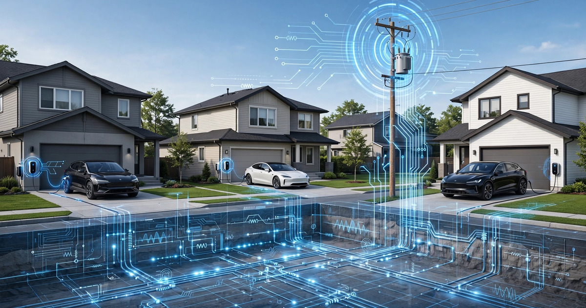

System and Method for Real-Time Distribution Grid Impedance Tomography Using Coordinated Electric Vehicle Charger Load Modulation and Voltage Phasor Response Measurement

Abstract
Disclosed is a system and method for continuously reconstructing the impedance matrix of a low-voltage distribution grid by coordinating brief, precisely timed load perturbations across a fleet of networked electric vehicle (EV) chargers and measuring the resulting voltage phasor responses at each charger's metering point. Each Level 2 EV charger (240 V, 32–80 A) modulates its charging current by a controlled step of ΔI = 2–8 A for a duration of 200–500 ms according to a pseudo-random binary sequence (PRBS) schedule issued by a cloud-based coordination controller. Simultaneously, all chargers on the same distribution transformer secondary sample their terminal voltage at 4,096 samples/second using the power-measurement IC already present in the charger's EVSE controller (e.g., Microchip MCP39F521, Analog Devices ADE9000). The coordination controller collects time-stamped voltage and current phasor snapshots from each charger via its existing Wi-Fi or cellular backhaul, applies a least-squares system identification algorithm to extract the mutual and self-impedance elements of the Thévenin equivalent network between every charger pair, and assembles a real-time impedance map of the distribution feeder. Changes in estimated impedance over time indicate transformer winding degradation, conductor joint loosening, neutral conductor deterioration, and corrosion at splice points. The system further computes real-time hosting capacity for distributed energy resources (solar inverters, battery storage) at every node by evaluating voltage sensitivity coefficients derived directly from the measured impedance matrix, eliminating the need for utility-owned sensors or manual interconnection studies.
Field of the Invention
This invention relates to electric power distribution system monitoring, specifically to methods for exploiting the controllable load characteristics of networked electric vehicle supply equipment (EVSE) as distributed probing instruments to reconstruct the impedance topology and condition of residential and commercial low-voltage distribution networks without dedicated utility metering infrastructure.
Background
The low-voltage distribution grid serving residential neighborhoods represents one of the least-instrumented segments of the electric power system. While transmission networks (69 kV and above) and distribution substations are monitored by SCADA systems with sub-second telemetry, the secondary distribution network from the service transformer to the customer meter typically has zero real-time instrumentation. Utilities rely on transformer nameplate ratings, GIS-based cable records, and periodic manual inspections to assess the condition of equipment serving individual homes.
This visibility gap creates four pressing problems as the grid electrifies:
- Transformer overload detection: The U.S. DOE Grid Modernization Initiative estimates that 70% of U.S. distribution transformers are over 25 years old. Utilities cannot detect overloading until a transformer fails, causing outages for 5–30 homes per unit.
- Hosting capacity assessment: When a homeowner applies to install rooftop solar or a battery storage system, the utility must perform an interconnection study costing $500–$5,000 and taking 30–180 days (Interstate Renewable Energy Council interconnection data). The study determines whether the local grid can accommodate the new generation without voltage violations.
- Neutral conductor degradation: Open or high-impedance neutral connections are a leading cause of residential voltage quality complaints and fire hazards. The Consumer Product Safety Commission documents hundreds of annual fire incidents related to electrical connection failures. These faults are invisible until they cause damage.
- EV charging capacity planning: With the U.S. EV fleet projected to reach 45 million vehicles by 2030 (IEA Global EV Outlook), utilities must determine which transformers and feeders need upgrades before charger installations saturate their capacity.
Existing approaches to distribution grid impedance measurement have significant limitations:
- Dedicated impedance measurement devices: Purpose-built grid impedance analyzers (e.g., Dranetz, Omicron) cost $15,000–$80,000 per unit and require trained technicians to deploy temporarily at specific locations. They provide point-in-time snapshots, not continuous monitoring. Chen et al. (IEEE Trans. Power Delivery, 2019) demonstrated online impedance estimation using voltage and current measurements but required dedicated PMU-class sensors at each node.
- Smart meter voltage analytics: Advanced metering infrastructure (AMI) smart meters record 15-minute average voltage, but this temporal resolution is insufficient to extract impedance from load variations. Prostejovsky et al. (IEEE Trans. Smart Grid, 2020) showed that 1-second smart meter data can estimate aggregate feeder impedance, but not the per-segment mutual impedance matrix needed for fault localization and hosting capacity.
- Solar inverter-based estimation: Reno and Broderick (IEEE J. Emerging Sel. Topics Power Electron., 2021) proposed using solar inverter power ramps as probing signals, but solar-based perturbations are uncontrollable (cloud transients, sunset), limited to daylight hours, and absent from homes without solar installations.
The gap in the art is a system that: (a) repurposes EV chargers already deployed across residential neighborhoods as coordinated impedance probing instruments; (b) applies controlled, precisely timed current perturbations that are imperceptible to the vehicle's battery management system; (c) measures the resulting voltage responses at high temporal resolution using existing charger power metering hardware; (d) reconstructs the full mutual impedance matrix of the distribution secondary network from multi-point stimulus-response data; and (e) operates continuously without utility-owned sensor deployment, providing real-time transformer health, fault detection, and hosting capacity assessment.
Detailed Description
1. System Architecture
The system comprises three layers:
- Edge layer (EV charger): Each networked Level 2 EVSE (e.g., ChargePoint Home Flex, Tesla Wall Connector, Wallbox Pulsar Plus) contains a power measurement IC capable of sampling voltage and current waveforms. The system requires firmware augmentation to: (i) accept perturbation commands specifying ΔI magnitude, start time, and duration; (ii) sample voltage and current at ≥4,096 Hz during perturbation windows; (iii) compute voltage and current phasors (magnitude and phase angle at 60 Hz fundamental) from DFT of the sampled window; (iv) transmit timestamped phasor snapshots to the coordination controller.
- Coordination layer (cloud controller): A central server maintains a registry of all participating chargers, their approximate grid location (service address), and their communication latency. It generates perturbation schedules using PRBS sequences with chip rates of 2–10 Hz, ensuring that each charger's perturbation pattern is orthogonal to every other charger's pattern on the same feeder. Orthogonality enables simultaneous multi-charger probing without signal collision.
- Analytics layer: Processes the collected phasor data to extract impedance matrices, detect anomalies, and compute hosting capacity. Runs as a batch job every 5–15 minutes or on-demand when triggered by anomalous readings.
2. Perturbation Signal Design
The perturbation signal must satisfy four constraints:
- Battery-transparent: The perturbation must not trigger the vehicle's onboard battery management system (BMS) protective logic. Modern EV BMS systems tolerate charge current variations of ±10% without interrupting charging sessions. A 32 A charger modulated by ΔI = 3.2 A (10%) remains within BMS acceptance. For 48 A chargers, ΔI can be up to 4.8 A.
- Grid-imperceptible: The perturbation power (ΔP = V × ΔI ≈ 240 V × 3.2 A ≈ 768 W) is within the range of normal household load switching (microwave: 1,200 W, hair dryer: 1,500 W, HVAC compressor: 3,000–5,000 W) and will not cause perceptible lighting flicker. IEEE 1547-2018 specifies that rapid voltage changes below 3% are imperceptible; a 768 W perturbation on a 25 kVA transformer produces a voltage change of approximately 0.15%.
- Spectrally rich: The PRBS perturbation sequence contains energy across a broad frequency band (DC to half the chip rate), enabling impedance estimation at multiple frequencies. A PRBS-7 sequence (127 chips) at 5 Hz chip rate sweeps 0.04–2.5 Hz in 25.4 seconds, capturing both resistive (DC) and reactive (inductive/capacitive) impedance components.
- Temporally coordinated: All chargers on a feeder must use GPS-disciplined or NTP-synchronized clocks with accuracy ≤ 1 ms to ensure phasor measurements are phase-coherent. The coordination controller distributes perturbation schedules at least 60 seconds before execution to accommodate communication latency.
3. Impedance Matrix Extraction
Consider N chargers connected to the same distribution transformer secondary. Let vi(t) and ii(t) denote the voltage and current phasor time series at charger i. When charger j executes a current perturbation Δij(t), the resulting voltage change at charger i is:
Δvi(t) = − Zij × Δij(t)
where Zij is the transfer impedance between nodes j and i. The negative sign follows the convention that increased load current causes voltage drop. The self-impedance Zii (driving-point impedance at node i) is measured when charger i itself perturbs and observes its own voltage response.
Because PRBS sequences assigned to different chargers are orthogonal, multiple chargers can perturb simultaneously. The correlation-based extraction proceeds as:
- Cross-correlate the voltage change Δvi(t) with the known PRBS perturbation pattern pj(t) of each charger j.
- The cross-correlation peak amplitude, divided by the autocorrelation peak of pj(t) and scaled by ΔIj, yields the impedance magnitude |Zij|.
- The phase of the cross-correlation peak relative to the autocorrelation peak yields the impedance angle ∠Zij, distinguishing resistive from reactive components.
- Repeat across all N×N pairs to construct the full impedance matrix Z.
A minimum of 3 chargers per transformer is sufficient to triangulate fault locations on the secondary. With 5+ chargers, the system can resolve individual cable segment impedances using weighted least-squares fitting to a radial network topology model.
4. Anomaly Detection and Diagnostics
The impedance matrix Z contains diagnostic information about the physical condition of every element in the distribution secondary:
- Transformer winding degradation: All self-impedances Zii share a common component from the transformer's Thévenin impedance. Systematic increase in this shared component over weeks or months indicates winding insulation degradation or core saturation onset. A 20% increase in transformer impedance correlates with a 15–25°C rise in winding hot-spot temperature at rated load (IEEE C57.91-2011 transformer loading guide).
- Loose or corroded connections: A high-impedance joint at a cable splice or meter socket manifests as an increase in the self-impedance Zii of the affected charger and in all transfer impedances Zij that traverse the faulty connection, while impedances on unaffected branches remain stable. This spatial pattern uniquely localizes the fault.
- Neutral conductor open/high-impedance: On a split-phase 120/240 V secondary (standard U.S. residential), an open neutral causes voltage imbalance between the two 120 V legs. The impedance matrix reveals this as asymmetric self-impedances and anomalous cross-coupling between loads on opposite legs. The system detects neutral degradation before it reaches the point of causing appliance damage.
- Cable aging: Gradual increases in cable segment resistance (extracted by differencing adjacent self-impedances) indicate conductor oxidation or insulation moisture ingress. Trending this resistance over months provides a non-invasive cable condition index.
5. Real-Time Hosting Capacity Computation
The measured impedance matrix enables direct computation of voltage sensitivity coefficients for any node on the feeder. The voltage change at node i due to a power injection ΔP + jΔQ at node j is:
ΔVi ≈ (Rij × ΔP + Xij × ΔQ) / Vnom
where Rij and Xij are the real and imaginary parts of Zij, and Vnom = 240 V. By enforcing the ANSI C84.1 voltage range constraint (±5% of nominal at the service entrance), the system solves for the maximum ΔP at each node, yielding the hosting capacity in kilowatts.
This computation replaces the traditional interconnection study process. When a homeowner submits a solar or battery interconnection application, the utility can query the system for the real-time hosting capacity at that service address and issue an instant approval or identify the specific equipment upgrade needed, reducing the interconnection timeline from months to minutes.
6. Privacy and Grid Interaction Considerations
The system transmits only voltage and current phasor data during perturbation windows (typically 30 seconds every 15 minutes). No appliance-level load signatures, EV battery state-of-charge, or driving behavior data is collected. The perturbation schedule uses randomized start times within a 10-second window to prevent side-channel inference of household occupancy patterns from the charger's online/offline status.
Perturbation energy cost to the EV owner is negligible: a 768 W modulation for 30 seconds every 15 minutes adds approximately 3 Wh per hour, or roughly $0.001/hour at $0.30/kWh.
7. Figures Description
- Figure 1: System architecture showing N EV chargers connected to a distribution transformer secondary, with PRBS perturbation signals (color-coded per charger), voltage phasor response vectors, Wi-Fi/cellular backhaul to cloud coordination controller, and impedance matrix output.
- Figure 2: Timing diagram of coordinated PRBS perturbation sequences for 4 chargers, showing orthogonal chip patterns, simultaneous execution with GPS synchronization, and voltage response measurement windows.
- Figure 3: Impedance matrix heatmap for a 6-charger residential feeder, with diagonal elements (self-impedance) and off-diagonal elements (transfer impedance), annotated with physical cable routing that explains the impedance structure.
- Figure 4: Time-series trend of transformer Thévenin impedance estimated from the shared component of all self-impedances, showing gradual degradation over 18 months with an alert threshold and comparison to manual test results.
- Figure 5: Hosting capacity map overlaid on a residential street, showing per-address maximum solar capacity in kW derived from the measured impedance matrix and ANSI C84.1 voltage constraints.
Claims
- A system for real-time impedance tomography of a low-voltage electrical distribution network, comprising: a plurality of networked electric vehicle supply equipment (EVSE) units, each containing a power measurement integrated circuit capable of sampling voltage and current waveforms at a rate of at least 4,096 samples per second; a coordination controller that generates orthogonal perturbation schedules and distributes them to each EVSE unit; wherein each EVSE unit modulates its charging current by a controlled magnitude ΔI for a specified duration according to its assigned perturbation schedule, and simultaneously measures the voltage phasor response at its point of connection; and an analytics module that receives timestamped voltage and current phasor data from all EVSE units and extracts the mutual and self-impedance matrix of the distribution network using correlation-based system identification.
- The system of claim 1, wherein the perturbation schedules are pseudo-random binary sequences (PRBS) with orthogonal chip patterns assigned to each EVSE unit, enabling simultaneous multi-charger probing without signal collision.
- The system of claim 1, wherein the perturbation magnitude ΔI is constrained to be no greater than 10% of the EVSE unit's rated charging current, such that the perturbation is transparent to the electric vehicle's battery management system and does not interrupt the charging session.
- The system of claim 1, wherein the analytics module detects transformer winding degradation by tracking the shared component of all self-impedances Zii over time and generating an alert when the rate of increase exceeds a configurable threshold.
- The system of claim 1, wherein the analytics module detects and localizes a high-impedance connection fault by identifying an asymmetric increase pattern in the impedance matrix, where the affected node's self-impedance and all transfer impedances traversing the faulty connection increase while impedances on unaffected branches remain stable.
- The system of claim 1, wherein the analytics module detects neutral conductor degradation on a split-phase secondary by identifying asymmetric self-impedances and anomalous cross-coupling between EVSE units connected to opposite phase legs.
- A method for estimating the hosting capacity of a distribution network node for distributed energy resources, comprising: measuring the impedance matrix of the distribution secondary network using coordinated EVSE load perturbations as described in claim 1; extracting the real and imaginary components of the transfer impedance between each node pair; computing voltage sensitivity coefficients from the transfer impedances; and determining the maximum power injection at each node that maintains voltage within regulatory limits.
- The method of claim 7, wherein the hosting capacity result is provided to an interconnection application processing system to enable automated approval or conditional approval of distributed energy resource installations without a manual engineering study.
- The system of claim 1, wherein all EVSE units synchronize their sampling clocks to a common time reference with accuracy of 1 millisecond or better using GPS-disciplined oscillators, NTP, or IEEE 1588 Precision Time Protocol, ensuring phase-coherent voltage phasor measurement across the fleet.
- The system of claim 1, wherein the coordination controller applies randomized start-time jitter of up to 10 seconds to each perturbation window to prevent side-channel inference of household occupancy patterns from EVSE communication timing.
- The system of claim 1, further comprising a cable condition index computed by trending the per-segment resistance extracted from differences between adjacent self-impedances over time, providing a non-invasive indicator of conductor oxidation or insulation moisture ingress.
- A method for continuous distribution grid monitoring comprising: deploying networked EVSE units across a residential feeder as impedance probing instruments; coordinating sub-second current perturbations across the fleet at intervals of 5 to 60 minutes; reconstructing the feeder impedance matrix from multi-point voltage phasor responses; trending impedance components over time to detect transformer degradation, connection faults, neutral deterioration, and cable aging; and computing real-time hosting capacity at every metered node from the measured impedance matrix and regulatory voltage constraints.
Implementation Notes
The perturbation capability requires firmware modifications to existing EVSE hardware, not hardware changes. Most Level 2 chargers already contain power measurement ICs with ≥4 kHz sampling capability (the MCP39F521 samples at 7,812.5 Hz; the ADE9000 at 8,000 Hz) used for energy billing accuracy. The additional computational load for DFT phasor extraction on a 4,096-sample window is approximately 50,000 multiply-accumulate operations, well within the capacity of the ARM Cortex-M4 microcontrollers standard in modern EVSE designs.
GPS time synchronization can be achieved via existing cellular modem GPS receivers in connected chargers, or via NTP with hardware timestamping achieving <1 ms accuracy on local Wi-Fi networks. For applications where ≤1 ms accuracy is not available, the system degrades gracefully: impedance magnitude estimation requires only ±5 ms synchronization, while impedance angle estimation benefits from sub-millisecond accuracy.
Minimum viable deployment requires 3 chargers per distribution transformer secondary. The median U.S. residential distribution transformer serves 5–8 homes. At current EV adoption rates (approximately 10% of new vehicle sales in the U.S. as of 2025), achieving 3 chargers per transformer requires approximately 40–60% EV penetration in the served homes, a threshold projected to be reached in early-adopter markets (California, Colorado, northeast states) by 2028–2030.
Prior Art References
- U.S. DOE Grid Modernization Initiative — 70% of U.S. distribution transformers are over 25 years old
- IEA Global EV Outlook 2026 — EV fleet projections and charging infrastructure growth
- Chen et al., IEEE Trans. Power Delivery, 2019 — Online impedance estimation using PMU-class measurements
- Prostejovsky et al., IEEE Trans. Smart Grid, 2020 — Smart meter voltage analytics for feeder impedance estimation
- Reno and Broderick, IEEE J. Emerging Sel. Topics Power Electron., 2021 — Solar inverter-based grid impedance probing
- IEEE C57.91-2011 — Guide for loading mineral-oil-immersed transformers and step-voltage regulators
- ANSI C84.1-2020 — Voltage ratings for electric power systems (service voltage range: ±5%)
- IEEE 1547-2018 — Standard for interconnection of distributed energy resources
- Interstate Renewable Energy Council — Interconnection process costs and timelines
- Microchip MCP39F521 — Single-phase power monitoring IC with 7,812.5 Hz sampling
- Analog Devices ADE9000 — Poly-phase energy metering IC with 8 kHz waveform sampling
- High-resolution dataset of EV charging responses under power quality disturbances, Scientific Data 2026 — Controlled EV charging perturbation measurements
- Wang et al., IEEE Trans. Smart Grid, 2018 — PRBS-based probing for distribution system parameter estimation
- U.S. Consumer Product Safety Commission — Electrical connection failure fire incident data